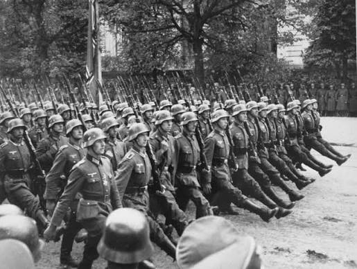
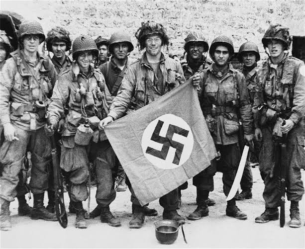
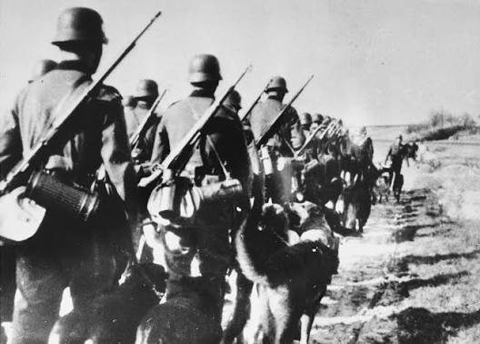

El inicio: La Segunda Guerra Mundial comenzó oficialmente el 1 de septiembre de 1939, cuando la Alemania nazi de Adolf Hitler invadió Polonia. Este ataque provocó que Gran Bretaña y Francia declararan la guerra a Alemania dos días después, el 3 de septiembre. Este estallido fue el resultado de tensiones acumuladas desde el final de la Primera Guerra Mundial.



Expansión del conflicto:
Alemania invadió la Unión Soviética en junio de 1941 (Operación Barbarroja), y Japón atacó la base estadounidense de Pearl Harbor en diciembre de 1941, globalizando la guerra.
Batallas Clave:
Enfrentamientos masivos como la Batalla de Stalingrado (1943) frenaron a Alemania en el este, mientras que el Desembarco de Normandía (Día D, 1944) abrió el frente occidental en Europa.
Rendición Alemana:
Las tropas soviéticas tomaron Berlín, lo que llevó al suicidio de Hitler y a la rendición alemana.
Fin en Japón:
Estados Unidos lanzó bombas atómicas sobre las ciudades japonesas de Hiroshima y Nagasaki los días 6 y 9 de agosto, precipitando la rendición formal de Japón el 2 de septiembre de 1945.
Consecuencias:
El conflicto dejó decenas de millones de muertos, evidenció los horrores del Holocausto nazi, dividió a Europa y dio inicio a la Guerra Fría entre Estados Unidos y la Unión Soviética.
La Segunda Guerra Mundial
27 / Julio / 2026 | Rodri | Más sobre mi